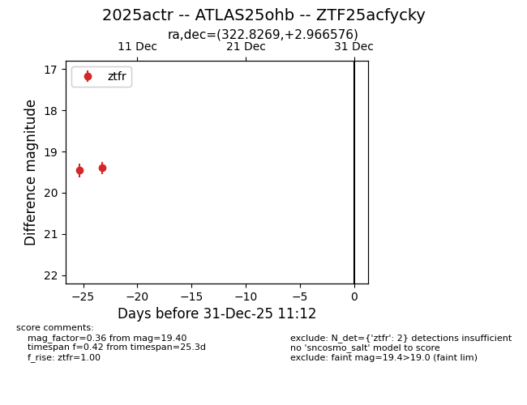
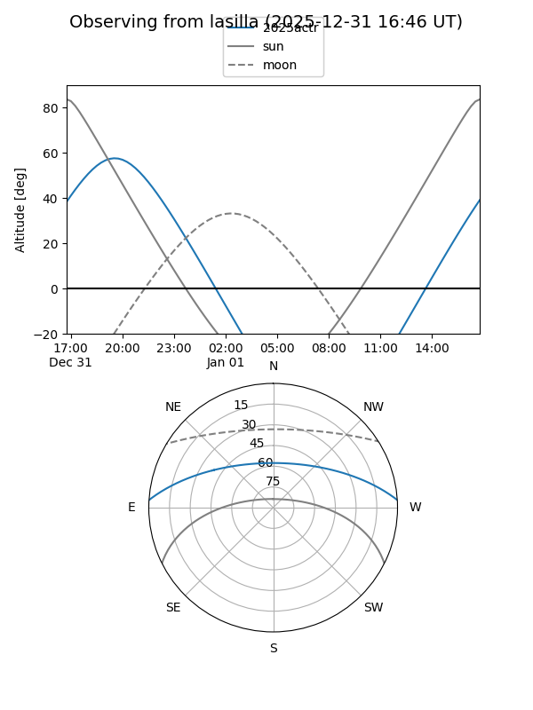
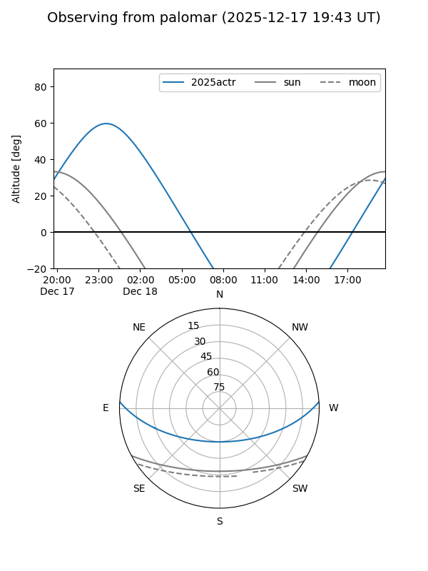

2025actr
Target 2025actr at 2025-12-31 18:00
Aliases and brokers:
FINK: link
Lasair: link
ALeRCE: link
TNS: link
YSE: link
alt names
ZTF25acfycky (ztf,fink_ztf)
2025actr (tns,yse)
ATLAS25ohb (atlas)
Coordinates:
equatorial (ra, dec) = 322.8269,+2.96658
equatorial (HMS+DMS) = 21:31:18.47,+02:57:59.68
galactic (l, b) = (56.7943,-33.18343)
Flags:
Photometry:
last ztfr=19.40
2 ztfr detections
Lightcurve

Visibility


Additional plots